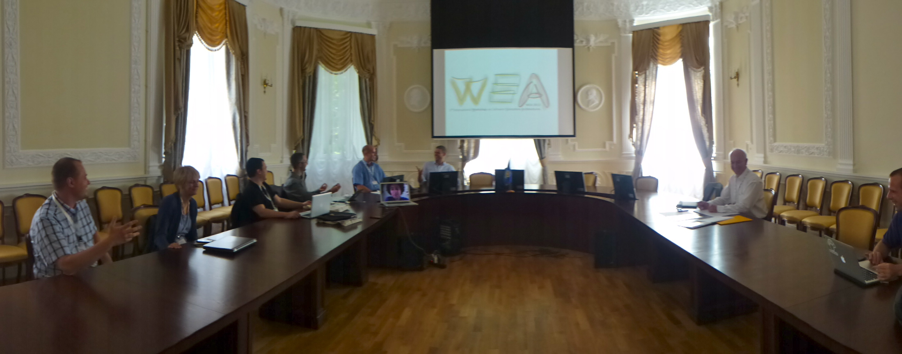

Mircea Lungu
Slinger Jansen
Simone Amorim
Romain Robbes
Juergen Musil
Alfred Zimmermann
You...
can have a short presentation about in the "open mic" session
This was the tenative program. We did change it a bit but the main point was achieved: everybody got the chance to talk about his work at leisure and we had really long discussions about each of the papers. Thanks everybody for participating, and see you next year!

| 9:30 - 11:00 | Welcome Papers: Adopting and Using Software Ecosystems
|
| Coffee Break | |
| 11:30 - 13:00 |
Papers: Challenges and Tools for Evolving Software Ecosystems
|
| Lunch Break | |
| 14:30 - 16:00 |
The Collaborative Session
|
| Coffee Break | |
| 16:30 - 18:00 |
Wrapping Up
|